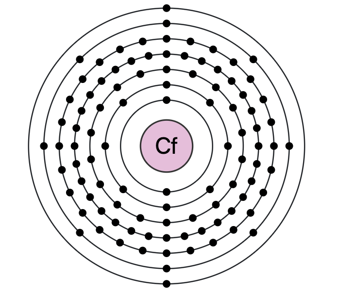

Atomic Number 98 | A Synthetic Radioactive Element

Overview
Californium is a chemical element with the symbol Cf and atomic number 98.
It is a synthetic, radioactive metal in the actinide series.
Californium was first synthesized in 1950 by Stanley G. Thompson, Glenn T. Seaborg, Kenneth Street, Jr., and Albert Ghiorso at the University of California, Berkeley.
Named after the state of California and the University of California, californium is used in neutron sources and as a tool in nuclear research.
Properties & Uses
Atomic Number: 98
Atomic Mass: 251 u (most stable isotope)
Electron Configuration: [Rn] 5f10 7s2
Group / Block: Actinides (f-block)
Standard State: Solid at 25 °C
Melting Point: 900 °C
Boiling Point: 1470 °C
Density: 15.1 g/cm³
Californium is used in neutron sources for radiography and as a neutron emitter in nuclear reactors.
Its ability to produce neutrons makes it valuable for detecting gold and silver ores, as well as in cancer treatment and scientific research.
Californium in Action
Californium is a rare and valuable element with unique properties that make it essential in various scientific and industrial applications.
Its role as a neutron emitter has led to its use in nuclear reactors, radiography, and cancer treatment.
Californium's discovery and synthesis have contributed to our understanding of the actinide series and the periodic table as a whole.
Historical Perspective
Californium was first synthesized in 1950 by bombarding curium with alpha particles at the University of California, Berkeley.
Its name reflects its Californian origins and the institution where it was discovered.
Today, californium's unique properties as a neutron emitter make it a critical material in scientific research and specialized industrial applications.